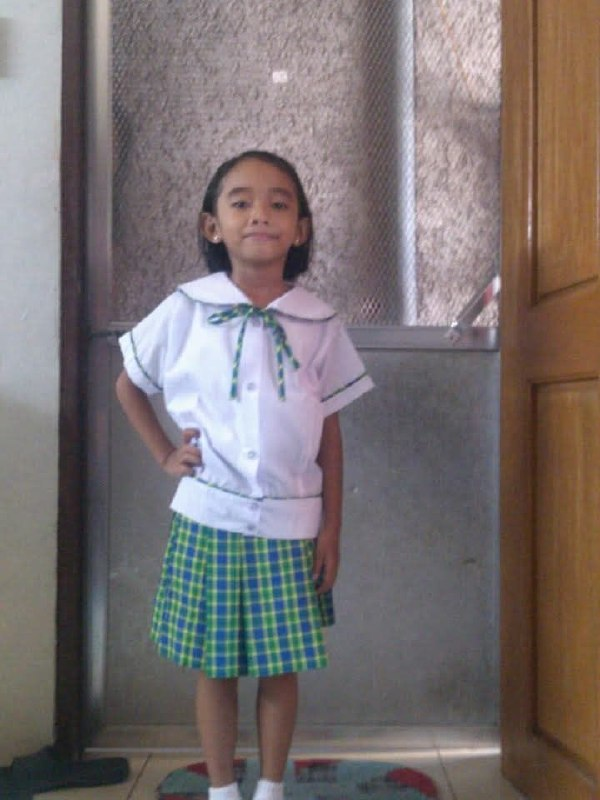
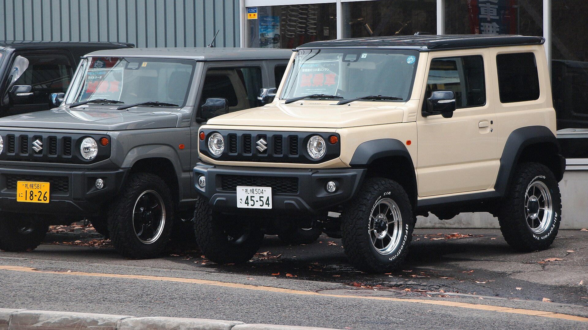
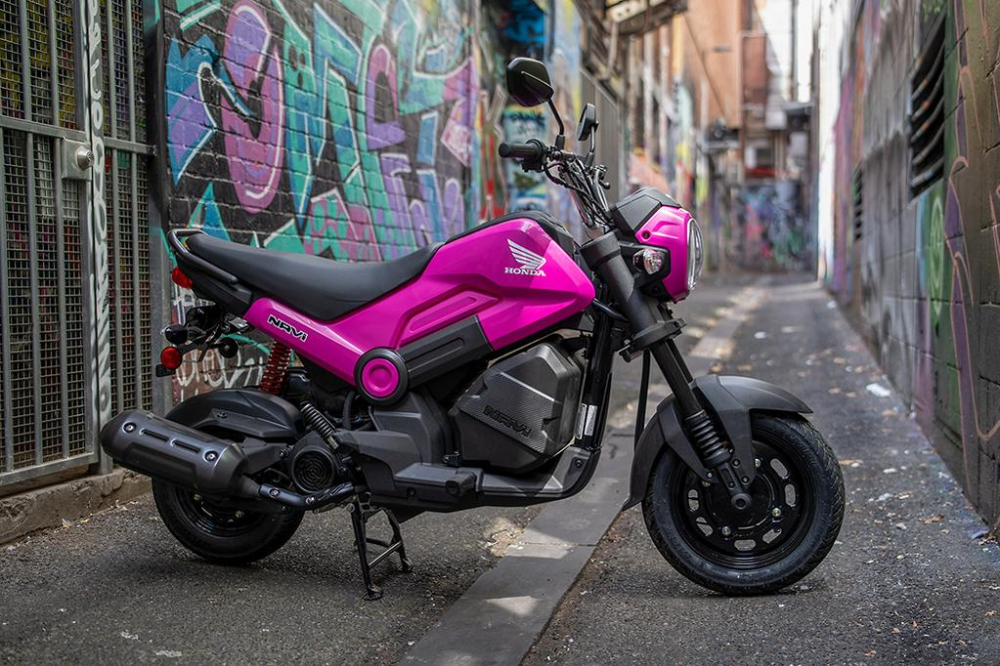

Yohoo this is me Bebaaa, first time making a website, 'kinda nervous. Naging Beba nickname ko sa bahay dahil noong bata ako hindi ko mabanggit apilyido ko na Villanueva, instead nasasabi ko is Villanbeba. Sobraaang bulol ko dati, one time may kwinento sila sakin na pagkauwi ko raw galing school may kinikwento ako about sa teacher ko, sabi ko "teacher men" so they assumed na name ng teacher ko is Men pero yung sinasabi ko talaga noon is "teacher NAMIN", pero ayun bulol parin naman ako ngayon okay lang
I was born on the 24th day of March, aries ako pero hindi rin naman ako masyado naniniwala sa mga ganon, depende lang kung may crush ako at nag mamatch zodiac signs namin :) pero sabi nila kapag aries palaging on fire (fire sign siya for a reason ig) pero minsan nag mamatch din talaga ugali ko sa mga aries, na hindi napapakali, palaging open for adventure. I'm very much an ambitious person. Mahilig ako mag explore, hindi ako takot sa changes, i hate stillness it sickens me. I love my solitude, I find peace in solitude. I love being alone, trying things alone, finding out things alone, go to places alone. Actually, being in tech field was never my first choice. Marami talaga akong naging pangarap bata palang ako, from pagiging chef, baker, doctor, teacher, lastly and it is still my dream maging pilot. Pagiging pilot kasi tingin ko it would be the closest thing to feel free like a bird. I know na syempre practically we can not afford yung flying school so I opt yung AMT sa PHILSCA ngek di pumasa so ginawa ko nag apply ako ng ME Mechanical Engineering para kahit papaaano nandoon parin ako sa field, but God had other plans for me. So this is me writing and doing my first web.
Funny enough na nasa IT ako ngayon dahil grade 12 January to May capstone era me would be crying in front of me begging not to take tech programs, I was soooo legit nagkaroon ng PTSD noon, hindi kasi gumagana yung prototype namin so most of my breakdowns sa last sem ng SHS is dahil sa capstone na yan, akala ko pa nga hindi ako makakagraduate dahil dyan kainisss, sabi kasi kapag hindi gumana yung prototype walang grade eh hindi ngani gumagana edi cry cry ako kahit saan ako abutan ng luha ko. Kaya dati tuwing nakakakita ako ng mga nag co-code, mga robotics para akong naiiyak, literal na parang PTSD, tuwing madadaanan ko yung mga lugar na kailangan namin pag bilhan ng gamit or mga lugar na pinag gawaan namin maiiyak nalang ako bigla dyan sa gilid, kahit sa prof namin naiiyak na ko iniisip ko palang na papasok ako sa subject niya, Don't get me wrong ha, magaling si Ms. pero huhuhu what was that subject, ako pa leader juzkopow kaya sakin lahat bagsak ng gawain para akong makokomatos fr. Pero okay naman na ata ako ngayon (ata?). This program would be a big big big step sa akin and sa skills ko kasi wala talaga akong background knowledge about this, but I'm very much thankful to have my cousin with me para turuan ako hehez


Cool car
Broom Broom